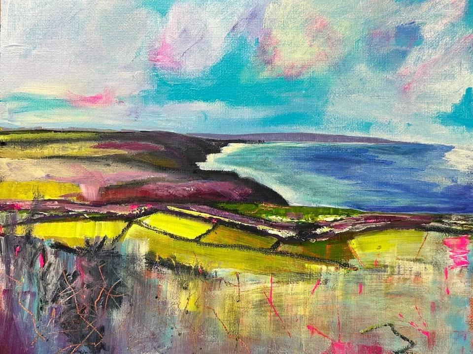

Watercolour Painter — Cornwall
Original watercolours inspired by the Cornish landscape — its ever-changing light, ancient moorland, and the quiet drama of the Atlantic coast.
Jane Aubrey — Mawla, Cornwall
Jane Aubrey is a watercolour painter based in Mawla, near Redruth, in the heart of Cornwall. Her work is rooted in the landscape of the far west — the moors, the cliffs, and the ever-present Atlantic light.
Working in watercolour, Jane creates pieces that balance careful observation with a personal response to place. Each work begins with time spent outdoors in the Cornish landscape before being developed in her studio at Carn Garth.
Her paintings are available to purchase directly from the studio. She welcomes visitors by appointment and is happy to discuss commissions.
Based in
Mawla, Redruth, Cornwall
Medium
Watercolour
Studio visits
By appointment
Commissions
Currently open